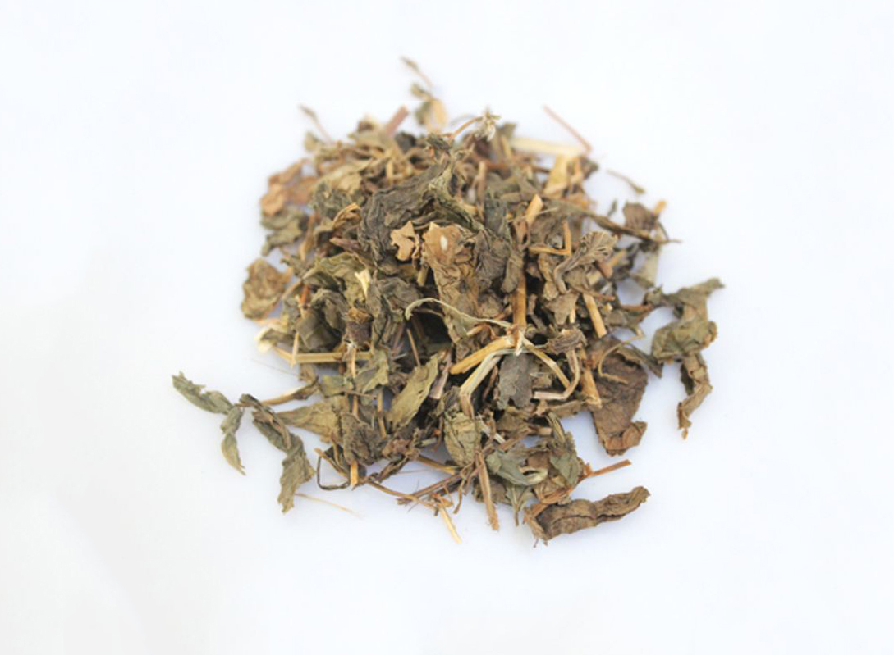

今日推荐中药饮片——蒲公英

蒲公英为菊科植物蒲公英、碱地蒲公英或同属数种植物的干燥带根全草，具清热解毒，消肿散结，利尿通淋之作用，
对疔疮肿毒、乳痈、瘰疬、目赤、咽痛、肺痈、肠痈、湿热黄疸、热淋涩痛等均有较好的治疗效果。
虽然蒲公英价格便宜，但其饮片仍有不少掺假使伪现象。常有将苣荬菜（北败酱）、苦苣菜、蛇莓、
苔菜叶等类似物切碎后掺入蒲公英饮片中，临床使用时要注意鉴别。
真品
呈皱缩卷曲的团块。根呈圆锥状；表面粗糙，棕褐色；根头部外围棕褐色或黑色。叶基生，多皱缩破碎，
湿润展平后完整叶片呈倒披针形，绿褐色或暗灰绿色（色泽鲜绿的就应该注意了），先端尖或钝，边缘浅裂或羽状分裂，
基部渐狭，下延呈柄状，下表面主脉明显。花茎1至数条，中空似压扁的秸秆，且柔软（茎较硬必然有问题），
常呈细长片形，医学|教育网搜集整理上下几乎等宽，均2～3毫米，绝无分枝和节（有茎节或侧枝的一定不是蒲公英），
每条顶生单支头状花序，有的可见多数具白色冠毛的长椭圆形瘦果。
新生花茎较短，柔毛明显，顶部着生类蛋形的花蕾。气微，味微苦。
饮片为其根、叶、花茎、花蕾及开放散开花朵的混合物。长段，叶多不完整；
具长短不等或折弯的花茎，细看可见脱落的具花纹的长椭圆形瘦果，其余同药材。
栽培品多为割取，几乎无根，叶和花茎常呈单个分散，花茎较长；饮片中其花茎也较多。其余同野生。
掺伪品
苣荬菜（北败酱）：为菊科植物苣荬菜经切碎后的碎段，其根圆柱形，表面淡黄棕色，根头部表面色不黑；
叶皱缩或破碎，上面深绿色，下面灰绿色，完整叶片展平后呈宽披针形或长圆状披针形，边缘无裂，先端有小尖刺，
基部呈耳状抱茎；偶见茎，稍硬，不等宽，有叶痕。味淡，微咸。
苦苣菜的嫩苗：为菊科植物苦苣菜未长出茎的幼嫩全草，其极似蒲公英，属误采或切碎后混入，
其根呈纺锤形，灰褐色，有多数须根。偶见茎，极宽大，呈柱形压扁状，具纵棱，质脆，易折断，断面中空；
叶皱缩破碎，完整叶展平后有羽裂，但裂片边缘有不整齐的短刺状齿。气微，味微咸。
蛇莓：为蔷薇科植物蛇莓切碎后的碎段。其全体被白色绢状毛。湿润展平后完整者呈倒卵形，基部偏斜，边缘有钝齿，
表面黄绿色，上面近无毛，下面被疏毛。具托叶；叶、托叶、叶柄均被白色毛茸，茎木质，医学|教育网搜集整理较硬，可见节。
有棕红色或暗褐色的聚合果；或可见三出的复叶，气微，味微涩。
贡菜（苔干）叶：为菊科植物贡菜（苔干）加工苔干后的叶子废料，经切碎后掺入蒲公英中，其皱缩，色相对较绿。
展平后，叶子横长，主脉宽且柔韧，边缘有皱波及小齿，无裂隙。味微甘酸。
另外也要注意混采混切现象，比如在收采时会附带采挖车前草，而在切制时又没有分拣出来，而导致混入。